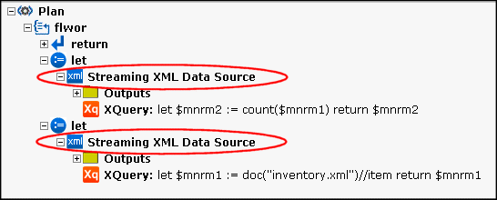
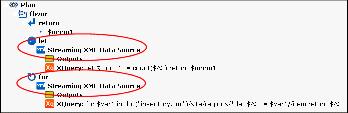

Querying Large XML Documents
Querying large XML documents can present processing challenges, both in terms of query performance and memory resources. The DataDirect XQuery Streaming XML feature provides an efficient way to process XQuery, especially against large documents.
This section describes what the Streaming XML feature is, how to use it, and provides several examples. It covers the following topics:
What is Streaming XML?
The DataDirect XQuery engine supports a processing technique known as Streaming XML. Streaming XML processes a document sequentially, discarding portions of the document that are no longer needed to produce further query results. This technique reduces memory usage because only the portion of a document needed at a given stage of query processing is instantiated in memory – it simultaneously parses the XML document, executes the query, and sends the data to the application as needed.
The Streaming XML feature operates on a per XML document basis. For example, in a single query, the Streaming XML feature might be used for XML document A and not for XML document B. See Streaming XML Is Not Always Used for more information on this topic.
Enabling Streaming XML
The Streaming XML feature is enabled by default. You can override the default behavior in one of two ways:
- Set ddtek:xml-streaming="no" in the query prolog. See Using Option Declarations and Extension Expressions for more information on this topic.
- Set the "streaming" attribute in the <request> element to no. See HTTP Functions <request> Element for more information on this topic.
Streaming XML Is Not Always Used
When Streaming XML is enabled, the DataDirect XQuery engine makes the determination to use it when the XQuery is executed. There are certain circumstances, however, in which Streaming XML is not used, even if it is enabled:
- If the XML document possibly needs to be parsed more than once. For example, the following two circumstances require an XML document to be parsed more than once:
- If the query includes fn:doc() without literal arguments. In this case, the documents to be queried are determined at runtime and, therefore, might be parsed twice.
- If the fn:doc() expression is used in multiple for clauses in a FLWOR expression. For example:
for $a in doc("A.XML")/A/B/C
return
for $b in doc("X.XML")/X/Y/Z
return
...
In this case, Streaming XML is used for A.XML, but not for X.XML.
- If nodes from the XML document are accessed with a reverse or optional axis, or with any function that is based indirectly on such an axis: fn:root(), fn:id(), and fn:idref().
When Streaming XML is not used, the DataDirect XQuery engine loads the entire XML document in memory and creates an optimized in-memory representation of it. The in-memory representation is used during query execution and then discarded. In general, this technique requires more memory than Streaming XML, but it can be more efficient (in terms of processing time) for certain XQuery.
Streaming Can Be Interrupted
In the following circumstances, some expressions can cause the Streaming XML feature to stop processing the current node:
- A node is used in a function or operator, including effective boolean value calculations. For example:
...
if(doc("foo.xml")/a/b/c
...
In this example, Streaming XML is used for the a and b nodes, but the c nodes and all of its children are instantiated in memory.
- Multiple path expressions are evaluated on a node. For example:
...
doc("foo.xml")/a/b/(c|d)
...
In this example, Streaming XML is used for the a nodes, but the b nodes and all of its children are instantiated in memory.
- A node is referenced multiple times in the query.
You can easily see whether or not Streaming XML is being used to process an XQuery using DataDirect XQuery Plan Explain. See Using Plan Explain for more information.
Data Sources
DataDirect XQuery supports Streaming XML on XML documents accessed through:
- fn:doc( )
- fn:collection( ) when using the extensions that allow querying of directories (see Querying Multiple Files in a Directory)
- External variables and initial context item. For the input values to be streamed, they must be defined as XQSequence, java.io.Reader, java.io.InputStream, StAX, or a SAXSource containing only an InputSource property (that is, not XMLReader). For streaming to work with external variables when not using prepared queries, DataDirect XQuery must be using deferred binding (see Support of Deferred Binding).
- External Java functions. For the return values to be streamed, they must be defined as javax.xml.transform.stream.StreamSource, javax.xml.transform.stax.StAXSource (for JVM 1.6 only), or com.ddtek.xquery.StAXSource.
Using Plan Explain
Plan Explain allows you to generate an XQuery execution plan that lets you see how DataDirect XQuery will execute your query. Among other information about your XQuery, Plan Explain shows you whether or not the DataDirect XQuery engine will use Streaming XML, as shown in the following illustration:

See Generating XQuery Execution Plans to learn more about Plan Explain.
Taking Advantage of Streaming XML
Depending on the task performed by your XQuery, it is possible to make small changes to your XQuery to take advantage of the performance benefits provided by Streaming XML.
Working with XML Headers
Streaming XML can be useful when parts of an input document are used to create a header in the result, and numerous transformations are performed on the rest of the result. Streaming XML can be especially beneficial when dealing with large input documents.
Consider the following XML document, which lists numerous stock holdings for an individual (imagine
<holding>elements numbering in the hundreds or even thousands).<?xml version="1.0"?> <person> <first-name>John</first-name> <last-name>Smith</last-name> <holdings> <holding ticker="PRGS">1000</holding> <holding ticker="STOCK1">2000</holding> <holding ticker="STOCK2">3000</holding> <!-- ... --> </holdings> </person>Your XQuery needs to create a separate XML document for each stock holding, using the header information to create a
<person>element and then listing holding information, like this:The XQuery used to provide this XML output could look like this:
let $firstName := doc("header.xml")/person/first-name let $lastName := doc("header.xml")/person/last-name for $holding at $pos in doc("header.xml")/person/holdings/holding return ddtek:serialize-to-url( <person name="{$firstName}" lastName= "{$lastName}">{$holding}</person>, concat("output-", $pos, ".xml"), "indent=yes" )In this case, though, the Streaming XML feature is not used where it will provide the most benefit. Indeed, it is used only for minor formatting operations performed on the XQuery output.
Making a simple change to the XQuery (shown in bold in the following code sample) ensures that Streaming XML is used throughout the XQuery – most importantly in the loop formed by the FLWOR expression:
let $firstName as element() := doc("header.xml")/person/first-name let $lastName as element() := doc("header.xml")/person/last-name for $holding at $pos in doc("header.xml")/person/holdings/holding return ddtek:serialize-to-url( <person name="{$firstName}" lastName="{$lastName}">{$holding}</person>, concat("output-", $pos, ".xml"), "indent=yes" )The
as element()declarations tell DataDirect XQuery that thefirst-nameandlast-nameelements in the source document are singletons, which allows the DataDirect XQuery engine to use Streaming XML on the FLWOR expression.Aggregation Functions
XQuery aggregation functions – functions that count elements in an XML document, for example – can take advantage of the efficiencies made available by the Streaming XML feature. Aggregation functions include:
Example
Consider the following XQuery; imagine that inventory.xml contains thousands of
<item>elements:Here, the
count()function is simply counting the number of<item>elements in the inventory.xml document. Examining the XQuery using Plan Explain, we can see that Streaming XML is used in two let clauses:
If we make the XQuery slightly more complicated, by returning the number of
<item>elements per<region>:XML Streaming is still used to process this XQuery, but note that the XQuery uses a let- and for- clause, rather than two let- clauses, as in the previous example:

Streaming XML Examples
This section provides several examples of the Streaming XML feature, including examples of when it is not used by the DataDirect XQuery engine to process the XQuery. The examples are commented, allowing you to easily copy/paste them into test applications.
When Streaming XML Is Used
The following show examples of XQuery in which Streaming XML is used.
Simple Path Expressions
(: A simple path expression. The complete document can be processed in streaming mode. :) doc("file.xml")/a/b/c (: A simple path expression. The complete document can be processed in streaming mode. If a c element is a descendent of a parent c element, it is memorized. :) doc("file.xml")/a/b//cPath Expression with Predicate
(: A path expression with predicate. The document is queried using the Streaming XML feature. Only the values of d that match the predicate are materialized; all c’s and x’s are materialized and discarded one by one. :) doc("file.xml")/a/b/c[x eq 1]/dPath Expression with Attribute Predicate
(: A path expression with attribute predicate. The document is queried using the Streaming XML feature. No materialization is performed. Only general comparisons with attribute tests are supported. :) doc("file.xml")//ITEMS[@ITEMNO eq '1004']XQuery Expression with fn:data
(: The document is queried using the Streaming XML feature. Atomization on streaming results is supported. ITEMNO elements are not first materialized and then atomized. :) fn:data(doc("file.xml")//ITEMS/ITEMNOXQuery Expression with Function on Node
(: The document is queried using the Streaming XML feature. Functions on nodes (fn:name(), fn:node-name(), fn:local-name(), etc.) are supported. :) doc("file.xml")//ITEMS/element()[fn:local-name(.) eq 'ITEMNO']XQuery Expression with exists
(: The document is queried using the Streaming XML feature. Existentional tests are supported. :) doc("file.xml")//ITEMS[exists(@ITEMNO)] doc("file.xml")//ITEMS[exists(ITEMNO)] doc("file.xml")//ITEMS/ITEMNO[exists(.)]Two XML Documents
(: Two different documents in a sequence. Both are queried with the Streaming XML feature. :) doc("file1.xml")/a/b/c, doc("file2.xml")/x/y/zComplex Example Using the Streaming XML Feature
(: The document is queried using the Streaming XML feature. :) <orders>{ for $order in doc("orders.xml")//orders for $customer in collection("CUSTOMER")/CUSTOMER[CUST_ID = $order/customer] return <order id="{$order/@id}"> <customer> <name>{$customer/CUST_NAME/data(.)}</name> <address>{$customer/CUST_ADDRESS/data(.)}</address> </customer> </order> }</orders> (: If the for clauses are switched, the orders.xml document is queried multiple times; therefore, streaming is not used and the document is instantiated. :) <orders>{ for $customer in collection("CUSTOMER")/CUSTOMER for $order in doc("orders.xml")//orders where $customer /CUST_ID = $order/customer return <order id="{$order/@id}"> <customer> <name>{$customer/CUST_NAME/data(.)}</name> <address>{$customer/CUST_ADDRESS/data(.)}</address> </customer> </order> }</orders>When Streaming XML Is Not Used
The following show examples of XQuery in which Streaming XML is not used.
Reverse Axis
(: The Streaming XML feature is not used due to the reverse axis. :) doc("file.xml")/a/b/c/../d (: This query could have been written as follows, in which case the b elements are materialized one by one. :) doc("file.xml")/a/b[c]/dOptional Axis
(: The Streaming XML feature is not used due to the preceding-sibling optional axis. :) doc("file.xml")/a/b[c=5]/preceding-sibling::*[1]Two Documents